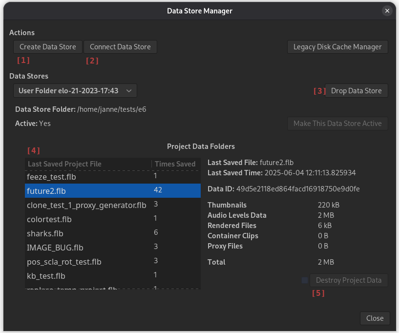
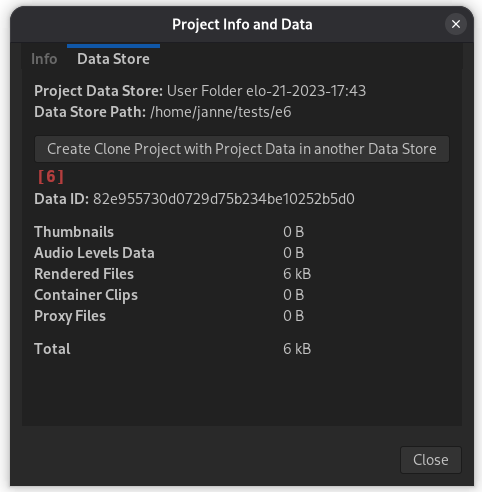

Flowblade Data Store feature allows user to decide where project data such as proxy files, thumbnails and rendered clips for containers and generators is saved.
Deleting data of individual projects without affecting other projects is now also possible.
Data Stores and Project Data folders
- Data Store is a folder that contains Project Data Folders.
- Project Data Folder is created for each new project automatically in the currently active Data Store on application startup, or when creating a new Project with File > New....
- Every subsequent saved version of the project keeps data in the same Data Store and Project Data Folder.
- Default Data Store is located at folder $XDG_DATA_HOME/projectsdata.
- If value of environment variable $XDG_DATA_HOME is changed, a new default Data Store is created at location $XDG_DATA_HOME/projectsdata.
You can ignore Data Stores
Project Data Folders are automatically created for projects. Users only do need to pay attention to them if they wish to save or move project data into some other place then the default Data Store, or delete project data of completed projects to save disk space.
Data Store Manager interface

Project Info and Data interface

Project Data actions
Selecting non-default Data Store for new Project
- Select File > New... from application menu.
- In Data Store panel select some other then current default Data Store.
- If you like to create a new Data Store for the project click Create Data Store button.
- Click Ok and a Project Data Folder is created in the selected Data Store.
Viewing Project Data Info
- For current Project select Project > Project Info and Data from application menu.
- For all projects created in the system select Edit > Data Store Manager.
Deleting Project Data
- Select Edit > Data Store Manager.
- In Data Stores panel select the Data Store where Project Data Folder you wish to delete is located.
- Identify the project data you wish to delete by Last Saved Project File [4] info and select that row in the table.
- Click on check button to enable Destroy Project Data [5] button in the info panel.
- Confirm deleting Project data.
Data for currently open Project cannot be deleted.
Moving Project Data
Project Data Folder placement in a Data Store is immutable once project is created.
To move Project Data Folder you will need to create a cloned project with Project Data Folder in another data store and then optionally delete original Project Data Folder.
- Select Project > Project Info and Data from application menu.
- Press Create Clone Project With Project Data in another Data Store [6] button in Data Store panel.
- Give file name for the new cloned project that has project data in another data store.
- Select Data Store where cloned Project Data Folder is placed.
- Press Create Clone Project button.
If you delete the new clone project file and old data you will end up in a situation where no working projects exist anymore.
It is advisable to not delete any project files after creating cloned projects before the project is fully completed.
Data Store actions
Creating a new Data Store
- Select Edit->Data Store Manager.
- Press Create Data Store [1] button and select an empty folder as the Data Store.
Changing active Data Store
- Select Edit > Data Store Manager.
- Select Data Store you wish to make active.
- Press Make This Data Store Active.
Dropping Data Store
- Select Edit > Data Store Manager.
- Select Data Store you wish to drop.
- Press Drop Data Store [3] button.
Connecting Data Store
- Select Edit > Data Store Manager.
- Press Connect Data Store [2] button.
- Select a folder with Flowblade Data Store data inside.